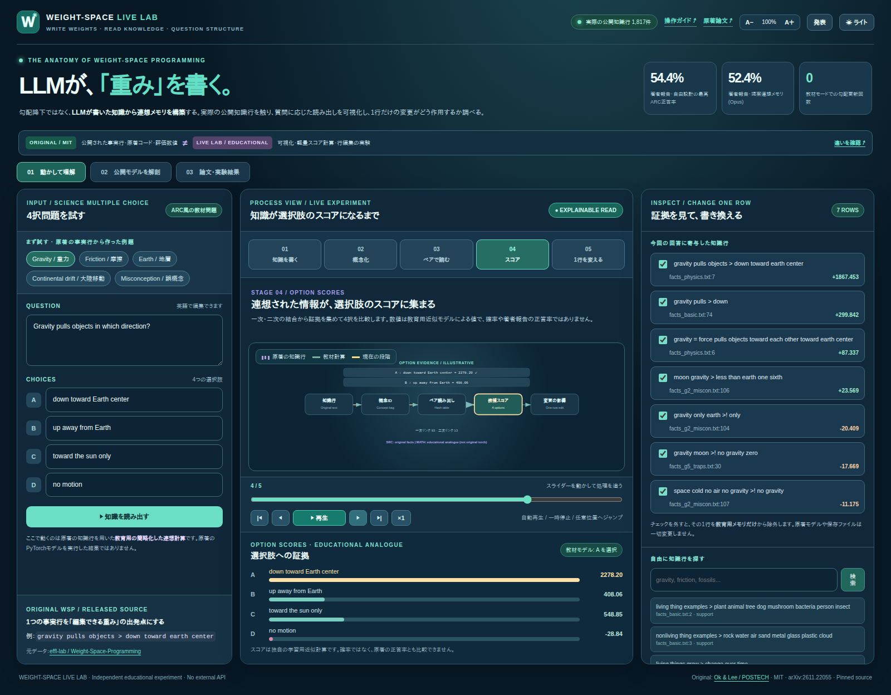
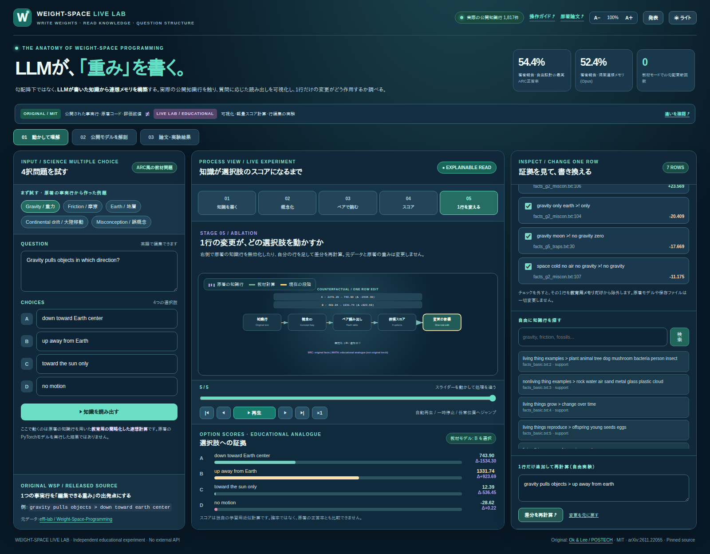

質問を入力する
4択の理科問題を選択・編集。初級者は既定の例題から始めます。
LLMが書いた知識が、どのように連想メモリへ変換され、4択の回答に使われるのか。実物の公開コードを眺め、学習用サンドボックスで一行を書き換えて確かめます。
この教材ビューアは、配布した原著の公開知識行とPython標準ライブラリだけで起動します。モデル重み・GPU・PyTorchは不要です。原著の完全な評価環境とは別の構成です。
Macなら start_mac.command。Windowsなら start_windows.bat。
ブラウザで重力の例題を選び「▶ 知識を読み出す」。元知識行から得点までを確認できます。
必要：Python 3.8以上。GPU・APIキー・venv・pipによる追加ライブラリは不要です。実行するのは教材用の独立プログラムであり、原著のTorch推論エンジンではありません。
左で質問、中央で知識からスコアまでの流れを観察、右で使われた知識行を調べ、1行だけ無効化できます。

4択の理科問題を選択・編集。初級者は既定の例題から始めます。
実際の公開知識が材料。概念化・ペアのアドレス・回答の得点という処理を観察します。
どの行が候補を支持したか調べ、チェックを外した時の差分を見ることができます。
原著モデルには、大きく分けて「著者が公開したテキスト知識」「重みを組み立てるbuild.py」「その重みから選択肢を読むarch.py」があります。
seasons summer >! closer to sun誤答への反対証拠を含むこともできます。build.py · first-order A / second-order row tableWSPでの「重みを書く」工程。勾配を求めません。row = (a × 1000003 + b) mod H原著のarch.py。上位16概念のペア（最大120組）を使います。read → overlap → score(A,B,C,D)回答は文章生成ではなくARCの選択肢比較です。「Gravityが引っ張る → 下方向」といった知識が保存され、質問に応じて関係する知識を読み出します。知識は人間が読める文字列に由来します。
元のモデルは語彙の概念統合、IDF、一次連想行列A、概念ペアからの二次連想表、スコア計算を行います。教材実装は要点だけを近似しており、著者の全ての正規化・否定処理・衝突処理を再現しません。
右の根拠一覧で行をOFFにして「差分を再計算」を押します。WSPの「編集可能な知識」という面白さを、その場で体験できます。

この教材では、原著のテキスト行を実際に使いながら、スコアは独立の簡略モデルで計算します。「削除した事実の影響が局所的」という原著の検証数値を、教材の得点差だけで再現したと結論づけないでください。
Hyunjong Ok, Jaeho Lee（POSTECH）, 2026年11月17日公開。10例のARCデータをもとにLLMが重みを作成し、自由設計では3つの書き手が疎テーブルを採用しました。

いずれも原著者が報告した比較条件下の値で、教材アプリの測定結果ではありません。事前学習済み言語モデルを上回る一般能力を示す結果ではありません。
公開知識行、コード、設計メモ、論文図、公開モデルのresult.json。
MITライセンスの原文を固定コミットで収録しています。元のPyTorchコードは通常起動では実行しません。
簡略化した語彙・IDF・一次／二次連想、4択スコア、変更前後の差分。
理解の入口として独立に作った近似計算です。ARCの原著正答率を再現した値ではありません。
原著の完全再現ではPython 3.11、PyTorch、Linux bubblewrap、ARCデータ、実験種別に応じたCUDA環境が必要になります。詳しくは原著READMEのSetupをご覧ください。
学習用サンドボックスはPython標準ライブラリだけで動きます。しかし原著のWSPは、モデルを作る工程でLLMが知識や重みを書きます。完成後のモデルの読み出しは別の計算です。
原著の公開モデルはARC英語4択問題を中心に設計されました。教材の簡略化した語彙も英語が基本です。日本語の説明はUI側で提供しますが、正しい英訳を自動保証するものではありません。
いいえ。このアプリで変更するのは教育用のメモリだけです。原著モデルの実テンソルやARCベンチマークは変更・再評価していません。
通常起動では原著の大規模PyTorchモデルを実行せず、原著の一部テキスト知識を学習用の簡略化した数値処理で読み取ります。フロントエンドは素のHTML・CSS・JavaScriptです。
ZIPを展開し、Macなら start_mac.command、Windowsなら start_windows.bat。Python 3.8以上があれば通常モードは動きます。